SOII · curso 2
1. Comunicación y Sincronización entre Procesos
1.1 Comunicación entre Procesos (IPC)
En los sistemas con multiprogramación existe una necesidad de comunicación entre procesos (IPC) de forma bien estructurada sin usar interrupciones. Esta comunicación se usa para:
- Transmitir información.
- Evitar interferencias entre procesos.
- Garantizar el orden correcto cuando existen dependencias -> sincronizarlos
La comunicación entre hilos es prácticamente igual, pero la transmisión de información es mucho más sencilla, pues comparten espacio de direcciones.
1.1.1 Condiciones de Carrera
Los procesos que trabajan en conjunto pueden compartir cierto espacio de almacenamiento en el que pueden leer y escribir datos. Este almacenamiento compartido puede estar en la memoria principal (probablemente en el kernel) o en un archivo.
Una condición de carrera sucede cuando varios procesos acceden a datos compartidos y el resultado final depende de cuál y cuándo se ejecuta. Depurar programas que contienen condiciones de carrera es muy complicado, pues la mayoría de ejecuciones acaba con resultados incorrectos.
Ejemplo
Si se tiene en el kernel una cola de impresión en la que los procesos van escribiendo nombres de archivos cuando necesitan imprimirlos. Existen dos variables compartidas almacenadas en un archivo accesible por todos los procesos:
IN, que apunta a la siguiente ranura libre de la cola.OUT, que apunta al siguiente archivo a escribir.
Hay un demonio de impresión que comprueba de forma periódica si hay archivos en la cola listos para imprimirse y, si los hay, imprime el primero.
- De manera más o menos simultánea, dos procesos (
y ) intentan poner en la cola un archivo. lee INy guarda el valor 7 en una variable localpierde la CPU y se comienza a ejecutar lee INy guarda el valor 7 en una variable localalmacena el nombre de un archivo que quiere imprimir en la posición 7 de la cola y actualiza INa 8- Se vuelve a ejecutar
almacena el nombre de un archivo que quiere imprimir en la posición 7 de la cola y actualiza INa 8- Se ejecuta el demonio de paginación, no detecta nada extraño, pero el archivo de
nunca se imprime.
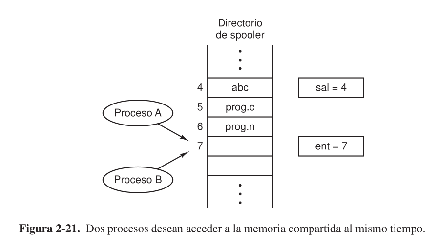
1.2 Regiones Críticas
Para evitar las carreras críticas es necesaria una exclusión mutua, esto asegura que, si un proceso está utilizando datos compartidos, los demás no podrán acceder a ellos. Una región crítica es una parte del programa que accede a memoria compartida.
Para que varios procesos cooperen en paralelo de manera correcta y eficiente al usar datos compartidos se tienen que cumplir estas condiciones:
- No puede haber dos procesos en la región crítica a la vez: evita las carreras críticas
- No puede hacerse suposiciones acercas de las velocidades o el número de CPUs
- Un proceso no puede bloquear a otro sin estar en su región crítica.
- Ningún proceso debe esperar indefinidamente al acceso a la región crítica.
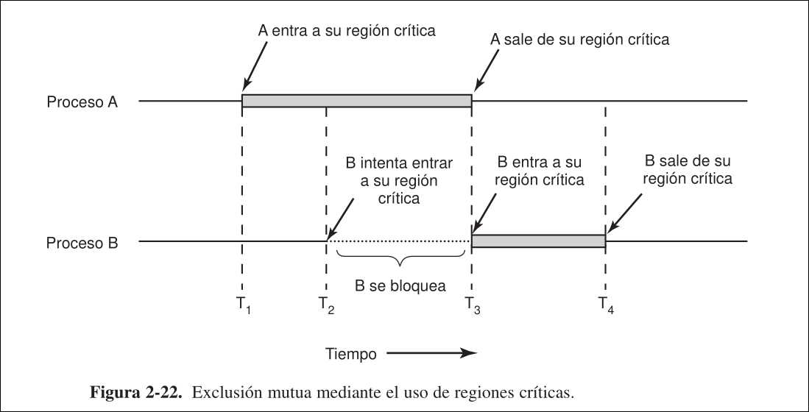
1.3 Exclusión Mutua con Espera Ocupada
Todas estas soluciones implican una espera ocupada, la espera ocupada es la evaluación continua de una variable hasta que aparezca cierto valor, lo cual desperdicia tiempo de CPU.
1.3.1 Deshabilitación de Interrupciones (hardware)
Consiste en que cada proceso deshabilite todas las interrupciones nada más entre a su región crítica y las rehabilite justo después de salir. Así, no se realizarán cambios de contexto, por lo que el proceso podrá acceder a la memoria compartida sin que ningún otro proceso intervenga.
El kernel deshabilita las interrupciones con frecuencia, pero es peligroso darle este poder a los procesos de usuario. No funciona en sistemas multicore, puesto que la deshabilitación solo afecta a la CPU que la ejecutó, permitiendo que las demás continúen trabajando y puedan acceder a la memoria compartida.
1.3.2 Variable Candado
Consiste en usar una variable de candado compartida, de manera que esta valga 1 cuando algún proceso está en su región crítica y 0 en caso contrario. Antes de entrar en sus regiones críticas, los procesos comprobarán el valor del candado, si es 0, entrarán y lo establecerán a 1. Si es 1, esperarán.
Viola la condiciones de que no puede haber 2 procesos en la misma región crítica a la vez puesto que la variable de candado es compartida y es vulnerable a carreras criticas.
Ejemplo
El proceso 0 en el candado, pero antes de que lo fije a 1 se realiza un cambio de contexto y el nuevo proceso fija el candado a 1. Cuando el proceso 1y por tanto ambos procesos estarán en sus regiones críticas a la vez.
1.3.3 Alternancia Estricta
Consiste en usar una variable de turno compartida, de manera que esta lleve la cuenta de a qué proceso le toca entrar a su región crítica. Al principio, turno vale 0. Cuando el proceso 0) desee entrar a su región crítica, verá que el valor de turno es 0 y entrará. El proceso 1) también descubre que es 0 y se quedará evaluando turno continuamente hasta que cambie a 1. Cuando 0 salga de la región, establecerá turno a 1 .
Sin embargo esto viola la condición de que un proceso no puede bloquear a otro sin estar en su región crítica. Además los procesos trabajan al ritmo del más lento.
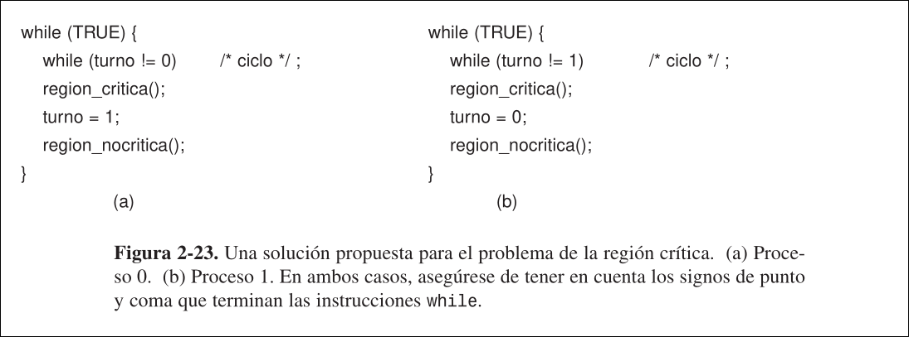
1.3.4 Solución de Peterson
La implementación presentada es válida para mantener la exclusión mútua de 2 procesos, Se puede realizar para más, pero es mucho más compleja.
- Consiste en usar una variable de turno compartida y un vector de 2 posiciones, de manera que cada una de sus entradas informa de si el proceso al cual corresponde desea entrar en la región crítica.
- Cuando el proceso
0desea entrar a su región crítica, invocará aentrar_region()indicando su interés en el vector y estableciendoturnoa0. Como el otro proceso no desea entrar, accederá de inmediato. Si ahora el otro proceso también llama aentrar_region(), se quedará evaluando el vector continuamente hasta queinteresado[0]cambie.
Cumple todas las condiciones, pero implica una espera ocupada.
Si el compilador cambie en entrar_region() el orden de la escritura en el vector y la en la variable turno, ambos procesos podrían estar dentro a la vez. Si ambos procesos invocasen entrar_region() más o menos a la vez, podrían aparecer carreras críticas en la variable turno, pero sólo entrará en la región aquel cuyo PID quede almacenado.
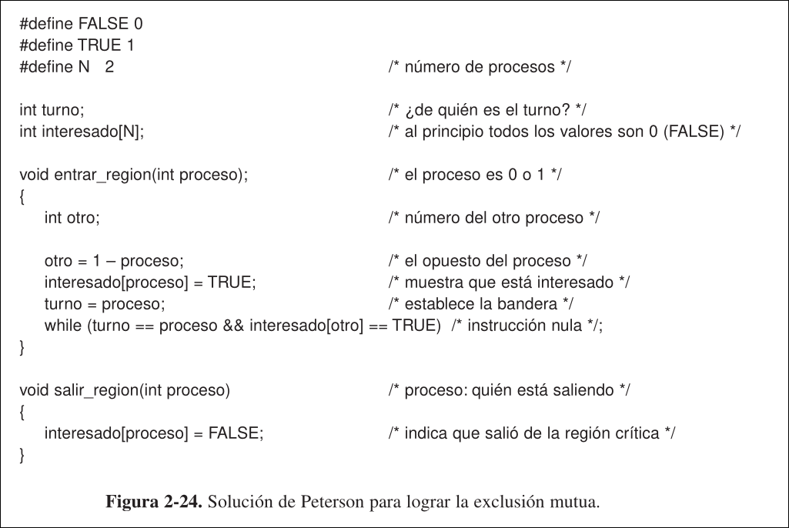
1.3.5 Instrucción TSL
Consiste en usar una instrucción atómica TSL reg, lock (Test and Set Lock), que lee el contenido de la palabra lock de memoria, lo guarda en un registro reg y después almacena un valor distinto de 0 en la dirección de memoria de lock.
Se garantiza que las operaciones leer y almacenar la palabra en memoria son indivisibles, es decir, ningún procesador puede acceder a la palabra de memoria hasta que termine la instrucción TSL.
Para conseguir esto, la CPU que ejecuta TSL bloquea el bus de memoria, impidiendo que otras CPUs accedan a ella hasta que acabe. Bloquear el bus de memoria es muy distinto a desactivar interrupciones, pues sí afecta al resto de procesadores. El SO y el hardware deben ayudar.
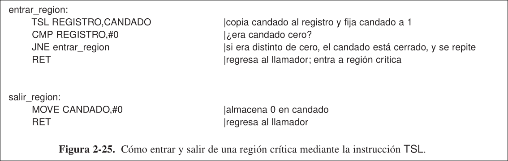
Instrucción XCHG
Funciona igual que la solución con TSL, pero usando la instrucción atómica XCHG reg,lock (exchange), que intercambia el contenido de la palabra lock de memoria con el registro reg. Es la implementación que usan las CPUs de Intel.
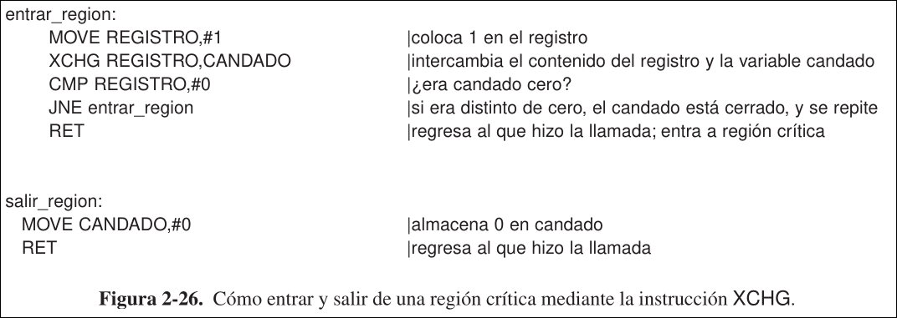
1.4 Dormir y Despertar
La solución de Peterson y las de TSL y XCHG son correctas, pero requieren una espera ocupada. La espera ocupada no sólo desperdicia tiempo de CPU, si no que también puede provocar un problema de inversión de prioridades:
- Consideremos los procesos,
con prioridad alta y con prioridad baja. El planificador ejecutará siempre que esté listo. - En instante en el que
está en su región critica, cambia a estado listo. Entonces, se comienza a ejecutar, pero como estaba en su región crítica, se quedará en una espera ocupada indefinidamente, pues nunca se planeará y por tanto nunca saldrá de la región crítica. (para lograr esto tienes que tener una planificación digna de un profundo subnormal, en la cual tengan prioridades que no decrezcan)
Ahora hablaremos de una primitiva de comunicación entre proceso que se bloquean cuando no pueden acceder a sus regiones críticas en lugar de desperdiciar tiempo de CPU. Se basa en las siguientes syscalls:
sleep: hacer que el proceso llamador se bloquee hasta que otro proceso lo despiertewakeup(PID): despierta al proceso de pidPID
1.4.1 Problema del Productor-Consumidor
Este problema se puede generalizar para aun número arbitrario de productores y consumidores sin cambiar el código.
- Dos procesos comparten un buffer común que puede contener
elementos. El número de elementos que tiene actualmente se almacena en cuenta - El proceso productor coloca información en el buffer y el proceso consumidor la saca.
- Antes de introducir elementos en el buffer, el productor leerá
cuentapara comprobar si el buffer está lleno. Sicuenta = N, el productor se duerme. En caso contrario, saca un elemento y decrementacuenta. - Ambos procesos comprueban si el otro se debe despertar y de ser así, lo despiertan.
Este método produce condiciones de carrera porque el acceso a cuenta no está restringido:
- EL buffer está vacío y el consumidor acaba de leer
cuentapara ver si es0 - El planificador le retira la CPU al consumidor y se la cede al productor.
- El productor inserta un elemento en el buffer, incrementa
cuentay observa que ahora es1, por lo que llama awakeuppara el consumidor. - Como el consumidor no se había dormido, la señal para despertarlo se pierde.
- El planificador le retira la CPU al productor y se la cede al consumidor.
- El consumidor evalúa el valor de
cuentaque leyó antes. Como es0, se duerme. - Tarde o temprano el productor llenará el buffer y se dormirá también. Ambos quedarán dormidos para siempre.
Para evitar esto, se podría usar un bit de espera de despertar, de manera que cuando se envía una señal de despertar a un proceso que no está dormido, se fija ese bit, y la próxima vez que ese proceso se intente dormir, no lo hará y restablecerá el bit. Esto funcionaría para este ejemplo simple, pero si hay más de un consumidor y/o productor un único bit será insuficiente.
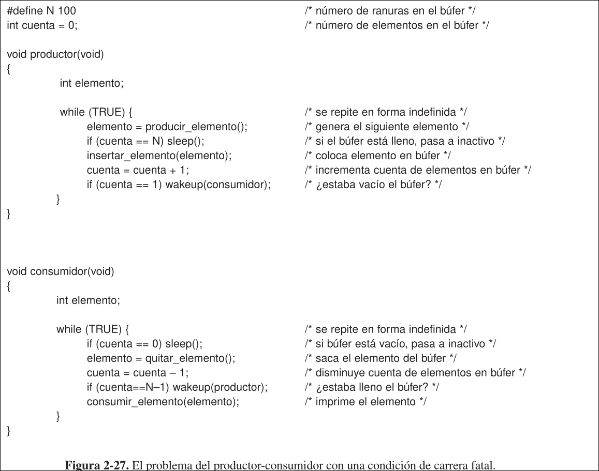
1.5 Semáforos
Un semáforo es una variable entera que se usa para contar el número de señales de despertar guardadas para uso futuro. Puede tomar valor:
0: no se guardaron señales de despertar>0: hay pendiente una o más señales de despertar
Esta solución se basa e las siguientes generalizaciones de sleep y wakeup:
down(semaforo): comprueba el valor delsemaforo- Si es
0: el proceso se pone a dormir sin completar la operacióndownpor el momento. - Si es
>0: disminuye el valor delsemaforo(es decir, consume una señal de despertar almacenada) y continúa.
- Si es
up(semaforo): incrementa el valor delsemaforo- Si algún proceso estaba inactivo en ese
semaforo, sin poder completar una operacióndownanterior, el sistema selecciona uno de ellos al azar y permite que complete la operacióndown. Así, después de la operaciónupen unsemáforocon procesos dormidos, este seguirá en0pero habra un proceso menos dormido en él.
- Si algún proceso estaba inactivo en ese
Ambas operaciones son atómicas: una vez que empieza una operación de semáforo, ningún otro proceso podrá acceder a él hasta que acabe.
- Para asegurar esto, se implementan como syscalls en las que el SO deshabilita las interrupciones brevemente. En este caso las deshabilitación de interrupciones es aceptable pues el manejo del semáforo requiere sólo unas pocas instrucciones.
- Si se usan varias CPUs, cada semáforo debe estar protegido por una variable de candado sobre la cual se usen las instrucciones
TSLoXCHG. En este caso las espera activa que implican estas instrucciones es justificable pues la operación de semáforo tarda sólo unos cuantos microsegundos.
La forma natural de ocultar las interrupciones a los prcoesos es asociar un semáforo que inicialmente sea 0 a cada dispositivo de E/S, de manera que:
- Justo después de iniciar el dispositivo, el proceso adminstrativo realiza un
downen su semáforo, bloqueándose inmediatamente. - Cuando entra la interrupción, el manejador de itnerrupciones realiza un
upen el semáforo asociado, haciendo que el proceso administrativo despierte.
Los semáforos tienen dos usos:
- Los semáforos binarios son aquellos que se inicializan a 1 y se usan para asegurar que sólo un proceso pueda entrar a su región crítica en un momento dado, es decir, para garantizar la exclusión mútua. Para usarlos, cada proceso realizará una operación
downjusto antes de entrar a su región crítica y unaupdespués de salir de ella. - Los semáforos de sincronización se usan para garantizar que ciertas secuencias de eventos ocurran o no.
1.5.1 Problema del Productor-Consumidor
Se usan 3 semáforos:
llenas: contabiliza el número de ranuras llenas (inicialmente 0). Es un semáforo de sincronizaciónvacías: contabiliza el número de ranuras vacías (inicialmente N). Es un semáforo de sincronización.mutex: asegura que el consumidor y productor no tengan acceso al buffer al mismo tiempo. Es un semáforo binario.
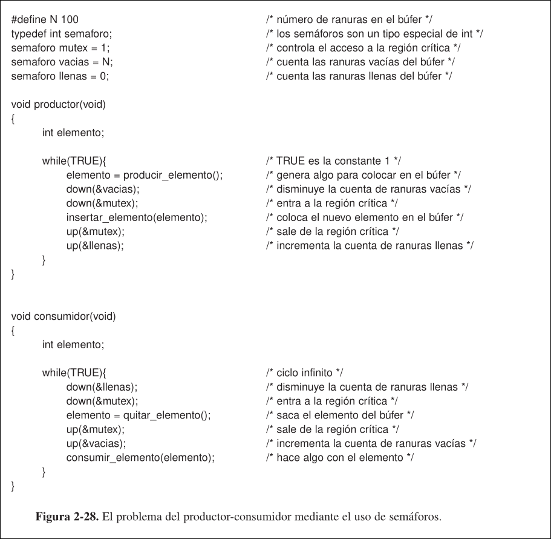
1.6 Mutexes
Un mutex es una variable con dos estados: abierto (desbloqueado) o cerrado (bloqueado). Se puede representar en un único bit, pero en la práctica se suelen representar con un entero con valor:
0: abierto!=0: cerrado
Son versiones simplificadas de los semáforos, pues no tienen la habilidad de contar, sólo sirve para administrar la exclusión mutua. Se implementan con facilidad y eficiencia es espacio de usuario siempre que esté disponible la instrucción TSL o XCHG, por lo que son especialmente útiles en paquetes de hilos implementados en espacio de usuario.
Cuando un hilo (o proceso) necesita acceder a una región crítica llama a mutex_lock, de manera que si el mutex está abierto (es decir, la región crítica está disponible), puede entrar a la región. En caso contrario, se bloquea hasta que el que está en la región salga y llame a mutex_unlock. Si hay varios hilos bloqueados por el mutex al llamar a mutex_unlock, se selecciona uno de ellos al azar y se permite que entre a la región.
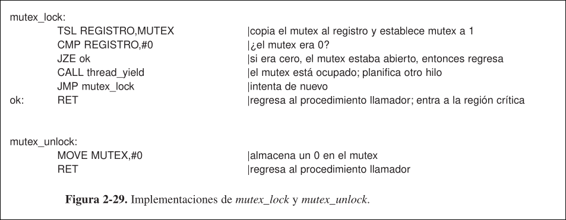
El código de mutex_lock es similar al de entrar_region de la solución con TSL, pero tienen una diferencia crucial:
- Cuando
entrar_regionno puede entrar a la región crítica, continúa evaluando el mutex en una esperar ocupada. Si los hilos están a nivel de usuario, no hay un reloj que detenga a los hilos después de cierto tiempo, por lo que un hilo que intente entrar a una región crítica ocupada iterará indefinidamente y nunca adquirirá el acceso, pues nunca se ejecutará el hilo que está en la región crítica. - Cuando
mutex_lockno puede entrar a la región crítica, cede la CPU a otro hilo, por lo que no hay espera ocupada.
Ni mutex_lock ni mutex_unlock requiere syscalls, por lo que los hilos en nivel de usuario se pueden sincronizar completamente en espacio de usuario, usando procedimientos de unas pocas instrucciones.
1.6.1 Mutexes en Pthreads
pthreads proporciona varias funciones para manejar mutexes:
pthread_mutex_init: crea un mutexpthread_mutex_destroy: destruye un mutexpthread_mutex_lock: cierra un mutexpthread_mutex_trylock: trata de cerrar un mutex, pero si falla no bloquea al llamador, otorgándole la flexibilidad de decidir qué hacer a continuación ( por ejemplo, realizar una espera ocupada).pthread_mutex_unlock: abre un mutex, liberando exactamente un hilo si hay alguno en espera.
Pueden tener atributos.
Variables de condición en Pthreads
Sirven para bloquear hilos hasta que se cumpla una determinada condición. Las variables de condición están asociadas a un mutex, de manera que cuando un hilo cierra el mutex y accede a la región crítica, puede quedar en espera por una variable de condición cuya condición no se cumple, hasta que otro hilo lo señale y pueda continuar.
pthreads proporciona varias funciones para manejar variables de condición:
pthread_cond_init: crea una variable de condiciónpthread_cond_destroy: destruye una variable de condiciónpthread_cond_wait(&condp,&mutex): expulsa al hilo del mutex y lo bloquea hasta que algún otro lo despierta. El bloqueo del hilo y la liberación del mutex se realiza de forma atómica.pthread_cond_signal(&condc): envía una señal a otro hilo bloqueado en la variable de condición para despertarlo.- Las variables de condición no tienen memoria, se se envía una señal a una variable de condición en la que no hay ningún hilo esperando, se pierde.
- El hilo despertado volverá a competir por el mutex, po rlo que, una vez lo adquiera, debe comprobar si la condición que lo despertó sigue cumpliéndose, pues desde que se envió la señal hasta la adquisición del mutex podría dejar de ser cierta.
pthread_cond_broadcast: envía una señal a varios hilos para despertarlos
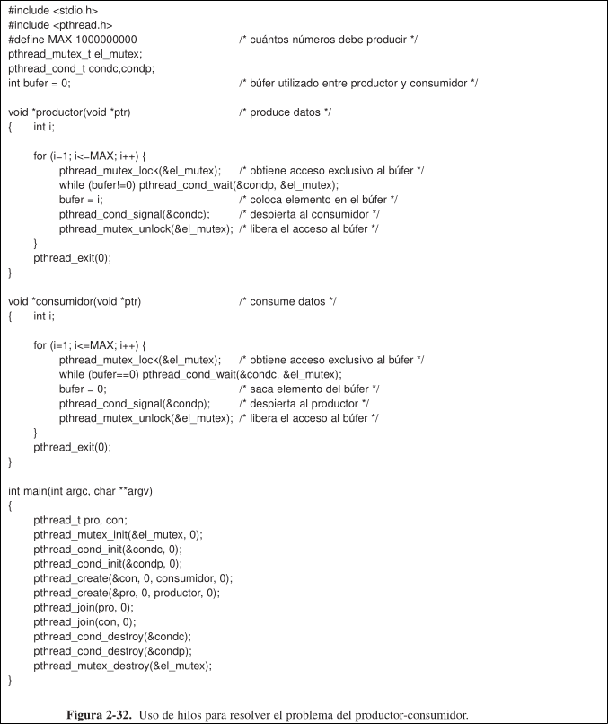
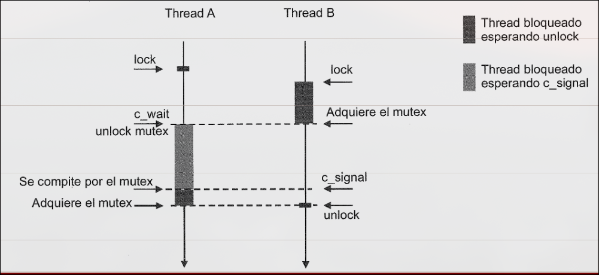
1.7 Monitores (esto no lo pregunta nide)
Aunque los semáforos pudieran parecer una manera muy sencilla de realizar la IPC, el programador debe ser extremadamente cuidadoso al usarlos. Para facilitar la escritura de programas correctos, se usa una primitiva de sincronización de mayor nivel, los monitores.
Por ejemplo, en la solución al problema del productor-consumidor con semáforos, si se invierte el orden de las operaciones down del productos, llegará un punto en el que tanto el productor como el consumidor quedarán bloqueados de manera indefinida.
Un monitor es una colección de procedimientos, variables y estructuras de datos que se agrupan en un tipo especial de módulo o paquete. Los procesos pueden llamar a los procedimientos del monitor cuando lo deseen, pero no pueden acceder directamente a las estructuras de datos internas del monitor desde procedimientos ajenos a este.
Consiguen implementar exclusión mutua gracias a que solo permite que haya un único proceso activo en ellos e cada instante.
Son una construcción del lenguaje de programación, por lo que el compilador puede manejar las llamadas a sus procedimientos de manera especial:
- Cuando un proceso llama a un procedimiento de un monitor, sus primeras instrucciones comprobarán si hay algún otro proceso activo en él.
- Si hay otro proceso activo en el monitor: el proceso llamador se suspende hasta que el otro abandone el monitor
- Si no hay otro proceso activo en el monitor: el proceso llamador puede entrar
- Es responsabilidad del compilador implementar la exclusión mutua en las entradas del monitor, normalmente se usa un mutex o semáforo binario.
La persona que escribe el monitor no tiene que saber nada de cómo el compilador gestiona la exclusión mútua, sólo tiene que saber que, si convierte las regiones críticas en procedimientos del monitor, está garantizada. Entonces, como es el compilador (y no el programador) quien está gestionando la exclusión mutua, es menos probable que algo salga mal.
Se sigue necesitando una forma para que los procesos se bloqueen cuando no puedan continuar, para lo cual los monitores usan variables de condición:
- Para evitar tener dos procesos activos en el monitor a la vez, se necesita una regla que indique lo que ocurrirá después de la operación
signal.- El proceso despertado se ejecuta y el llamador se suspende
- El proceso llamador sale del monitor inmediatamente
- Entonces, la instrucción
signalsólo puede aparecer como instrucción final en un procedimiento de monitor. - El proceso llamador sigue ejecutándose, y hasta que salga del monitor el proceso despertado no podrá continuar.
Aunque wait y signal se parecen a sleep y wakeup , la exclusión mutua automática en los procedimientos de monitor garantiza que la instrucción wait se pueda completar sin preocuparse de que otro proceso intente realizar un signal antes de que se complete.
Los monitores son un concepto de lenguaje de programación, y muchos lenguajes no los tienen. En realidad estos lenguajes tampoco tienen semáforos en sí, pero se agregan fácilmente mediante una biblioteca. Los monitores no funcionan en sistemas distribuidos con varias CPUs con su propia memoria privada conectadas por una red de área local.
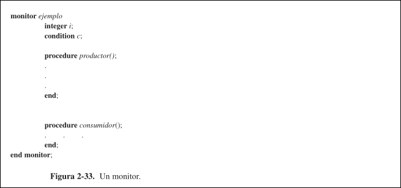
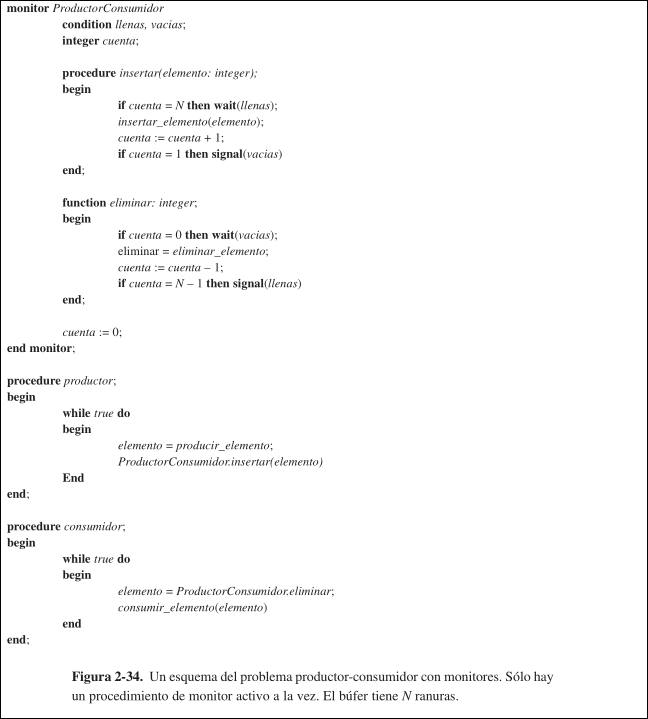
1.8 Pasaje de Mensajes
El pasaje de mensajes es un método de comunicación de procesos que se basa en las siguientes syscalls:
send(destino, &mensaje): recibe un mensaje a un destino especificadoreceive(origen, &mensaje): recibe un mensaje de un origen especificado ( o de cualquier origen, si se desea)
Si no hay un mensaje disponible, el llamador se puede bloquear hasta que llegue uno o puede regresar de inmediato con un código de error.
1.8.1 Aspectos de Diseño
Se deben nombrar los procesos de forma que los especificados como origen y destino estén libres de ambigüedad. Hay que utilizar algún mecanismo de autenticación para que los sistemas sepan que se están comunicando con quien esperan y no con un impostor.
Si los procesos que se están comunicando se encuentran en distintas máquinas conectadas por una red, se pueden perder mensajes en dicha red. Para protegerse de los mensajes perdidos, el emisor y el receptor puede acordar que, tan pronto como se reciba un mensaje, el receptor enviará un mensaje especial de acuse de recibo: ACK.
- Si el emisor no recibe e ACK en un cierto tiempo: retransmite el mensaje.
- Si el mensaje, se recibe correctamente, pero se pierde el ACK, el emisor retransmitirá, por lo que el receptor recibirá un duplicado.
- Para que el receptor pueda diferenciar un mensaje nuevo de una retransmisión, se colocan números de secuencia consecutivos en cada mensaje original. Al recibir un mensaje con el mimso núemrmo de secuencia que otro anterior, el receptor sabrá que es un duplicado que debe ignorar.
Si los procesos que están comunicando se encutnrarn en la misma maquina, pueden aparecer problemas de rendimiento. Copiar mensajes de un proceso a otro es mucho más lento que realizar una operación con un semáforo o un mutex. Como alternativa, se puede limitar el tamaño de los mensajes al de los registros de la máquina para realizar el pasaje usando los registros.
1.8.2 Problema del Productor-Consumidor
Se supone que todos los mensajes tienen el mismo tamaño, que no hay memoria compartida y que el SO coloca los mensajes enviados pero no recibidos automáticamente en el buffer.
- El consumidor envía
mensajes vacíos al productor. - Cada vez que el productor tiene un elemento para dar al consumidor, recibe un mensaje vacío y envía de regreso uno lleno.
El número total de mensajes en el sistema permanece constante en el tiempo y se pueden almacenar en una cantidad de memoria conocida de antemano.
- Si el productor es más rápido: todos los mensajes acabarán llenos y el productor se bloqueará esperando un mensaje vacío.
- Si el consumidor es más rápido: todos los mensajes acabarán vacíos y el consumidor se bloqueará esperando un mensaje lleno.
Una manera de direccionar los mensajes consiste en asignar a cada proceso una dirección única y direccionar los mensajes a los procesos. Otra alternativa es usar un buzón, una estructura de datos que se usa como lugar para colocar un determinado número de mensajes (normalmente especificado en su creación).
- El productor y el consumidor crean buzones con el tamaño suficiente como para contener
mensajes: - El productor envía mensajes con los datos actuales al buzón del consumidor
- El emisor envía mensajes vacíos al buzón del consumidor.
- Cuando un proceso trate de enviar a un buzón que está lleno, se suspende hasta que se elimine un mensaje de ese buzón.
- El buzón de destino de ambos contiene los mensajes que se han enviado al proceso destino pero que todavía no se han aceptado.
Otra forma de usar los buzones es para eliminar el uso del buffer completamente con la estrategia de encuentro:
- Si la operación
sendtermina antes que lareceive: el emisor se bloquea hasta que ocurre la operaciónreceive, momento en el cual el mensaje se puede copiar directamente del emisor al receptor, sin buffer de por medio. - Si la operación
receivetermina antes que lasend: el receptor se blquea ahsta que ocurre una operaciónsend.
Es más fácil de implementar que un esquema de mensajes con buffer. Pero es menos flexible debido a que el emisor y receptor se ven obligados a ejecutarse a paso de bloqueo.
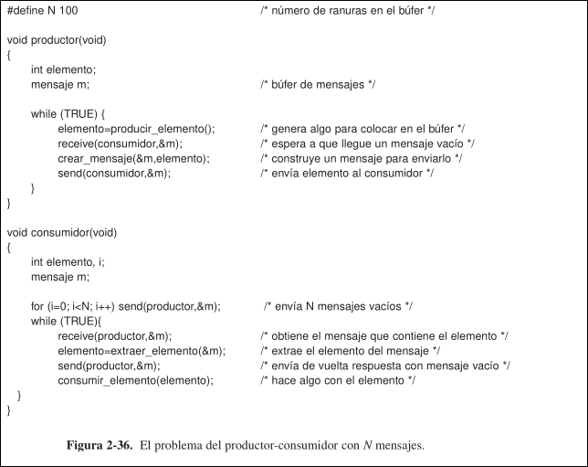
1.9 Barreras
Este método de sincronización está destinado a grupos de procesos, en vez de las situaciones con dos procesos de tipo productor-consumidor. Algunas aplicaciones se dividen en fases y tienen la regla de que ningún proceso puede continuar a la siguiente fase hasta que todos los procesos estén listos para hacerlo.
Para lograr esto, se coloca una barrera ejecutando la primitiva barrier, al final de cada fase. Cuando un proceso llega ante la barrera, se bloquea hasta que todos llegan a ella.
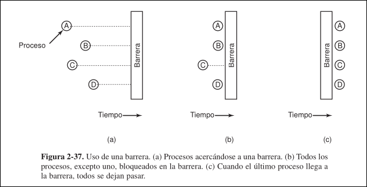
1.10 Problemas clásicos del IPC
1.10.1 Problema de los lectores y escritores
El problema de los lectores y escritores modela el acceso a una bd. En un sistema con muchos procesos que intenta leer y escribir (actualizar) en una bd, puede haber varios procesos leyendo la bd a la vez, pero si un proceso la está actualizando, ningún otro puede acceder a ella (ni siquiera los lectores).
Una posible solución es que el primer lector en obtener acceso a la bd realizce una operación down en el semáforo bd. Los siguientes lectores incrementan un contador cl.
A medida que los lectores van saliendo, decrementan cl y el último realiza un up en la bd, para permitir que un escritor bloqueado (si lo hay) entre.
Mientras haya un lectores activo, se admitiran los siguientes. Por tanto, siempre que haya un suministro continuo de lectores, todos entrarán nada más lleguen, por lo que un escritor que intente entrar estará suspendido hasta que no haya un lector presente.
Para evitar estas esperas en los escritores, se podría hacer que cuando llegue un lector y haya un escritor en espera, el lector se suspenda detrás del escritor. Así, cada escritor esperará a que terminen los lectores que estaban activos cuando llegó, pero no esperará a los que llegaron después de él. Así se logra una menor concurrencia y, por tanto, un menor rendimiento.
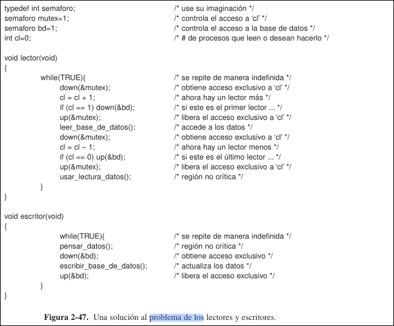
1.10.2 Problema de los Filósofos Comelones
El problema de los filśofos comelones modela procesos que compiten por el acceso exclusivo a un número limitado de recursos. Hay
La solución más obvia sería que tomar_tenedor provoque una espera hasta que el tenedor esté disponible y luego lo tome. Pero esto no funciona, porque si todos los filósofos toman sus tenedores izquierdos a la vez, ninguno podrá tomar el derecho y habrá un interbloqueo.
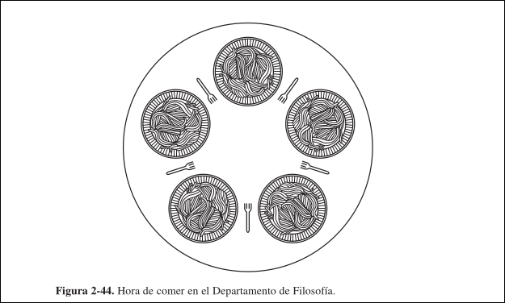
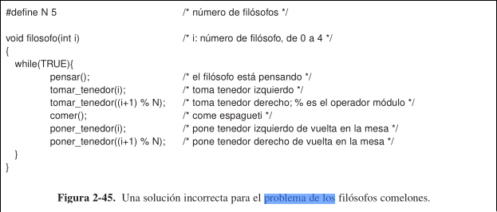
Para evitar el interbloqueo, después de tomar un tenedor se comprueba si el otro está disponible. Si no lo está, el filósofo regresa el tenedor que había tomado, espera cierto tiempo y repite todo el proceso. Pero tampoco funciona, si todos los filósofos comienzan el algoritmo a la vez y toman sus tenedores izquierdos, verían que los derechos están ocupados, así que dejarían los izquierdos, esperarían, volverían a tomar todos a la vez los derechos, y así consecutivamente, entrando en inanición.
Para evitar la inanición se puede hacer que la espera tenga una duración aleatoria. Así la probabilidad de bloqueo prolongado es muy baja. Aunque sea poco probable, puede fallar, por lo que no sirve para aplicaciones que requieren seguridad total.
Para evitar el interbloqueo y la inanición se protegen las instrucciones que van después de la llamada a pensar mediante un semáforo binario. Antes de empezar a adquirir tenedores, el filósofos debe realizar un down sobre el. Esto tiene un error de rendimiento, porque no permite la concurrencia.
Para conseguir el máximo paralelismo posible se usa un array estado para llevar registro de si cada filósofo está comiendo, pensando o hambriento. Un filósofo sólo se puede mover al estado de comer si ningún vecino está comiendo. Para ello se usa un array de
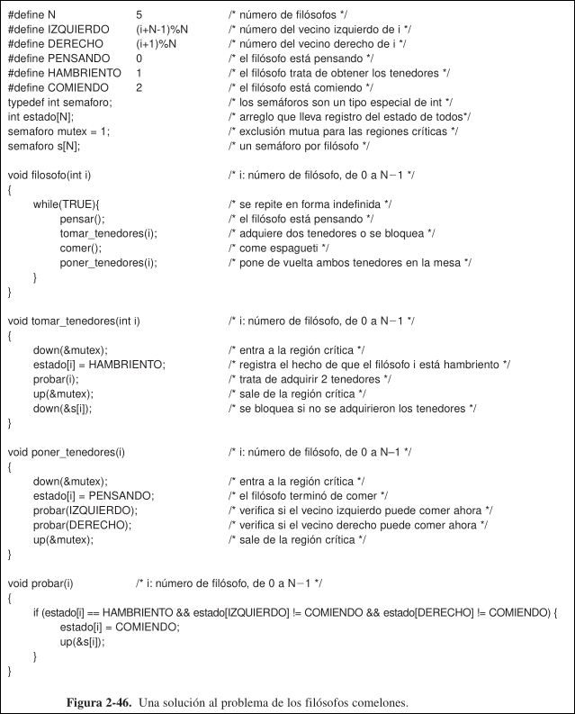